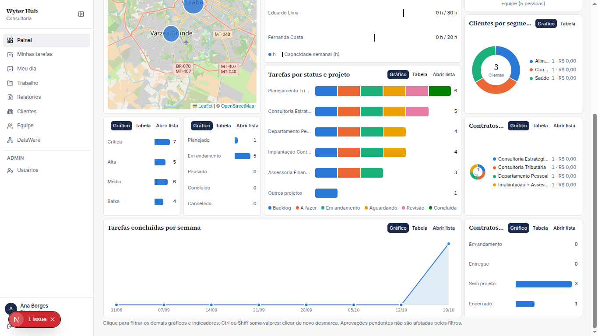
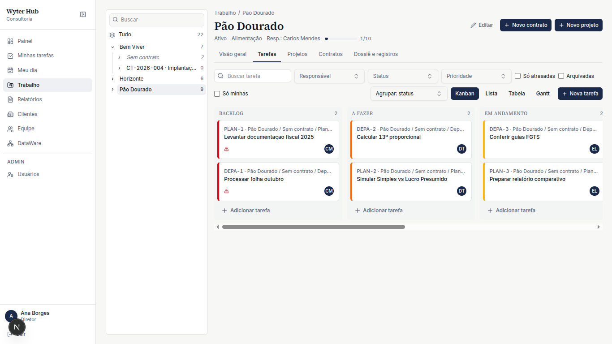
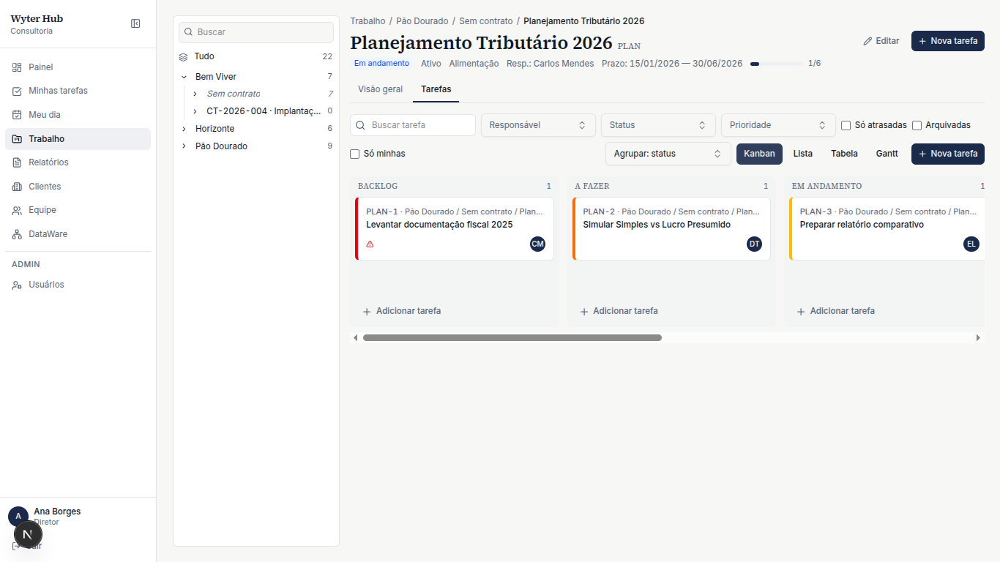
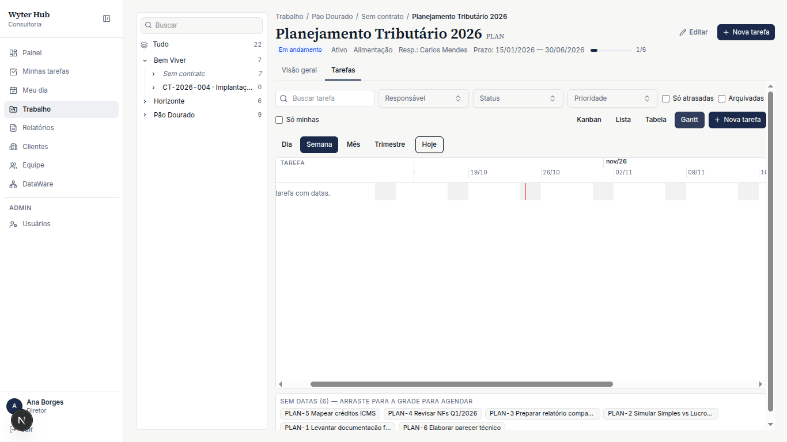
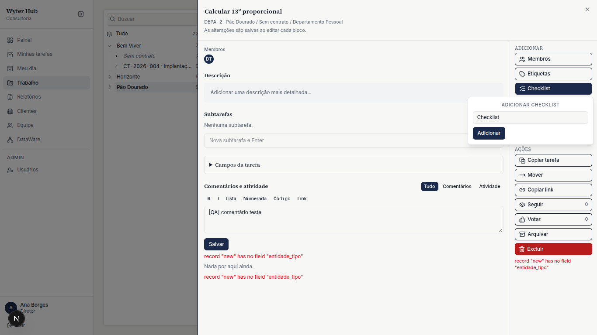
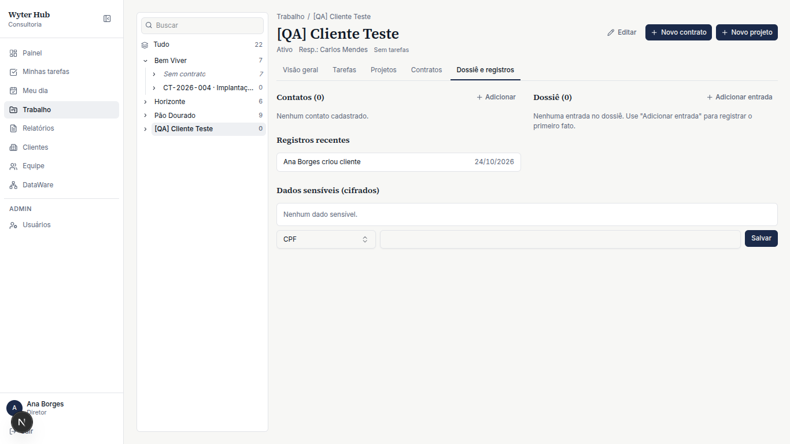
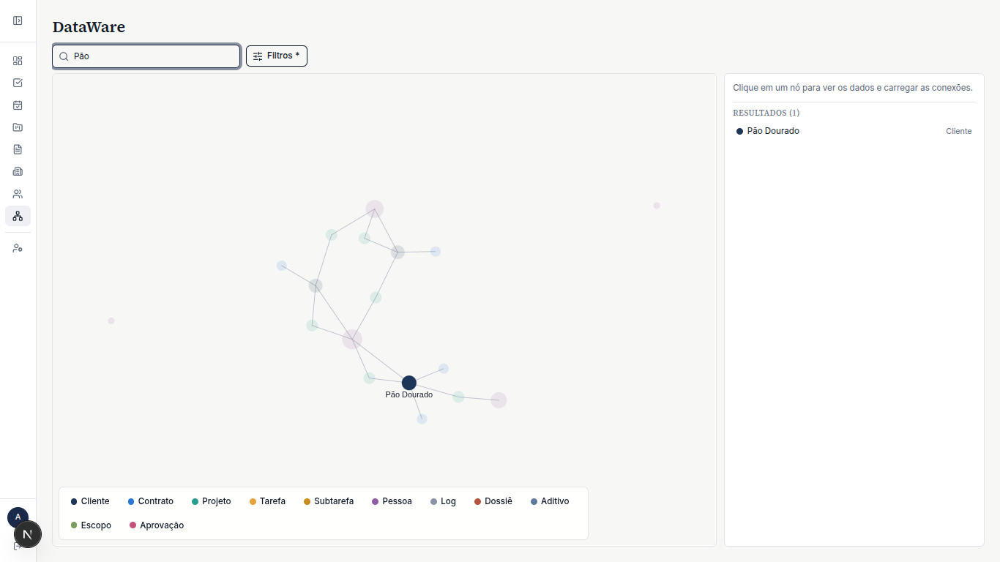
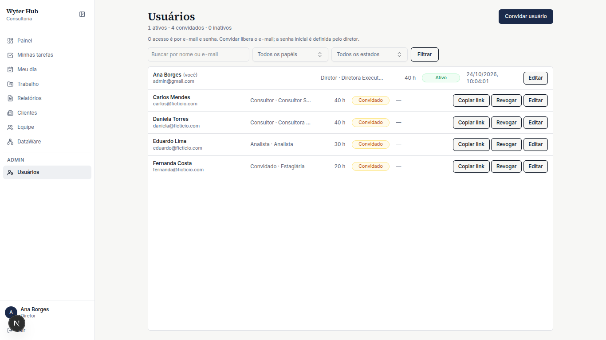
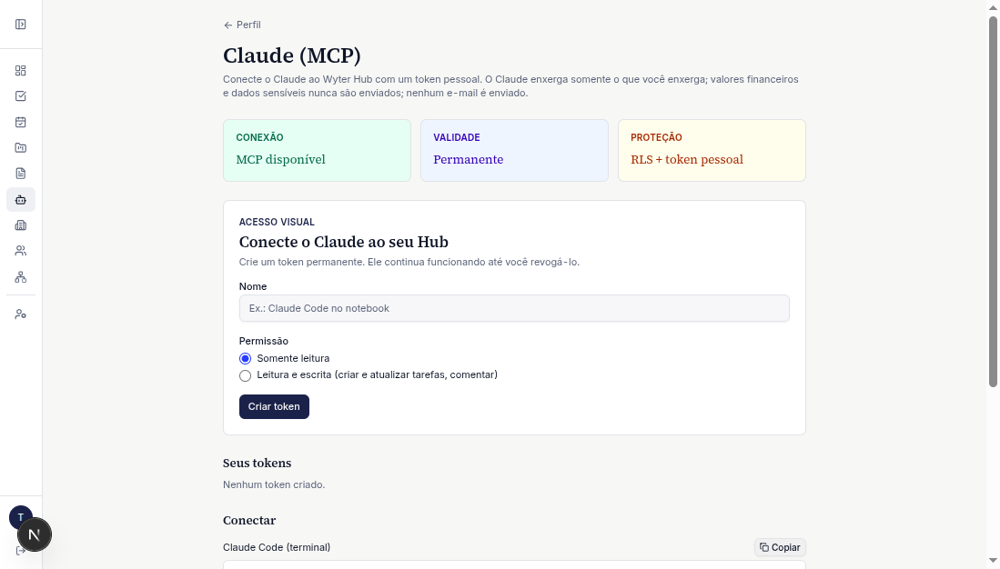

Wyter Consultoria · visão do produto
Uma operação inteira em um só lugar.
O Wyter Hub conecta estratégia, clientes, contratos, projetos, tarefas, documentos, indicadores e inteligência para transformar trabalho espalhado em uma operação visível.
Como a equipe trabalha no Hub
Esta coletânea apresenta a jornada principal do sistema em funcionamento: acompanhar a operação, executar o trabalho, entender cada cliente, conectar os dados e ampliar a produtividade com Claude. As capturas desta rodada foram feitas no ambiente autenticado em 25/10/2026.

Painel gerencial
A direção começa pelo panorama: indicadores, andamento dos projetos, carga da equipe, mapa de clientes e sinais que pedem decisão.
Valor para a gestão: menos tempo consolidando informação e mais tempo decidindo com contexto.

Trabalho organizado
Clientes, contratos, projetos e tarefas passam a fazer parte de uma mesma estrutura, sem áreas soltas nem informação duplicada.
Valor para a equipe: cada pessoa entende o que precisa ser feito e por que aquilo importa.

Fluxo visual
O Kanban mostra o trabalho em movimento: o que está para começar, em andamento, bloqueado ou concluído.
Valor para o cliente: mais previsibilidade sobre o avanço das entregas.

Prazo e dependências
O Gantt transforma tarefas em um plano de entrega, revelando prazos, marcos, atrasos e dependências entre atividades.
Valor para a operação: antecipar conflitos antes que virem atraso.

Uma tarefa com memória
Descrição, checklist, responsáveis, comentários, anexos e histórico ficam reunidos no mesmo lugar.
Valor para a consultoria: o conhecimento não fica perdido em conversas ou caixas de entrada.

Dossiê do cliente
O contexto estratégico de cada cliente acompanha a execução: fatos, decisões, contatos, restrições e histórico.
Valor para o atendimento: qualquer pessoa autorizada consegue retomar a história sem recomeçar do zero.

DataWare
Os dados deixam de ser ilhas. Relações entre clientes, contratos, projetos, tarefas e documentos ficam visíveis para consulta.
Valor para a IA: o DataWare fornece mais contexto ao Claude, conectando fatos, documentos, projetos e histórico para respostas mais completas e úteis.

Acesso na medida certa
Papéis e permissões garantem que cada pessoa veja e altere somente o que precisa para trabalhar.
Valor para a direção: crescimento com controle, rastreabilidade e segurança.

Claude.ai conectado ao contexto
A área visual do MCP prioriza a conexão com o Claude.ai comum pelo chat, com autorização OAuth, permissões por papel e proteção por RLS. A ponte permite consultar o Hub com as mesmas permissões do usuário, sem expor dados financeiros ou sensíveis; clientes técnicos ficam como alternativa.
Valor para os consultores: transformar dados organizados em preparação, síntese e ação.